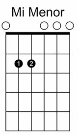

Lliçó 2.1
Aprèn: MI Menor (Em)
Benvingut a la nostra lliçó de guitarra!
Una vegada que els acords majors estan sota control, passarem als seus germans menors, que expressen una qualitat tonal més melancòlica.
Avui aprendrem com tocar un dels acords més senzills i bonics en la guitarra: l'acord de MI Menor, o Em. Aquest acord té un so profund i melancòlic, i és un element fonamental en moltes cançons de diferents estils musicals.
Què Necessites:
- Una guitarra afinada.
- Les teves mans.
- Ganes d'aprendre.
Pas 1: Col·locació de la Guitarra
Assegura't que estàs assegut còmodament amb la guitarra ben reposada a la teva falda. El mànec de la guitarra ha d'estar accessible sense que hagis d'estirar massa el braç.
Pas 2: Els Dits i les Cordes
Per tocar l'acord de MI Menor, només necessitaràs utilitzar dos dits. Aquí tens com ho farem:
Dit 1 (dit mig): Col·loca aquest dit al segon trast de la corda A (la cinquena corda començant des de baix).
Dit 2 (dit anular): Col·loca aquest dit al segon trast de la corda D (la quarta corda començant des de baix).
Pas 3: Com Prémer les Cordes
Assegura't que els teus dits no toquen altres cordes que no siguin les que necessites prémer. Les puntes dels dits haurien de prémer fermament contra les cordes per evitar qualsevol tipus de brunzit quan les cordes sonin. Una vegada els dits estiguin ben col·locats, toca totes les cordes amb la mà dreta. En tocar un Em, pots tocar totes les cordes des de la sisena corda (la més greu) fins a la primera (la més aguda). El so hauria de ser clar i ric, com el següent:
Pas 4: Integració en la Pràctica
Ara que ja saps com formar l'acord de MI Menor, prova de canviar des d'altres acords bàsics que ja hem après, com són l'acord de MI Major o LA Major. Això t'ajudarà a millorar la teva agilitat i a familiaritzar-te amb el mànec de la guitarra.
Felicitats, ara ja saps com tocar l'acord de MI Menor a la guitarra! Recorda que la clau per millorar és la pràctica constant. Dedica temps a practicar aquest acord i a integrar-lo en cançons que t'agradin. Amb paciència i pràctica, aviat veuràs com la teva habilitat amb la guitarra creix.